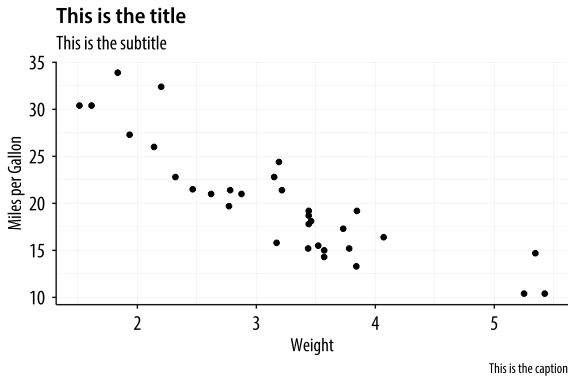
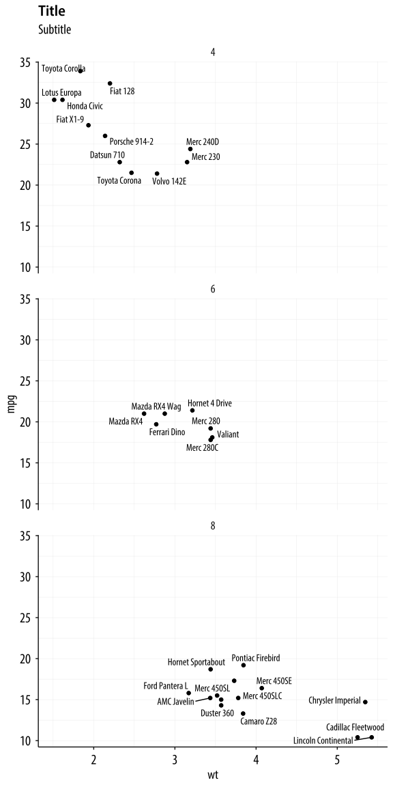

This package is not really meant for general use.
About
Myriad Pro-based theme for ggplot, providing theme_myriad_semi(), theme_myriad_map() and theme_myriad_nymap(), along with _socviz_ versions of all of these, which are like Myriad but premised on the existence of top-level fonts named Socviz that pull out the SemiCondensed and Condensed versions of Myriad, as detailed here. All based on or derived from the Myriad Pro SemiCondensed face, with Myriad Pro Condensed or its Socviz version also available for labels inside the plot area.
Fonts
This repo does not include the Myriad Pro font files (the .otf files). Adobe owns these fonts. You must get them separately. They may already be installed on your computer. Acrobat Reader and other Adobe software sometimes install them.
Myriad Pro
When R loads myriad, the package registers these font families:
| Family | Faces |
|---|---|
"Myriad Pro SemiCondensed" |
SemiCondensed, with Semibold SemiCondensed as the bold face |
"Myriad Pro Semibold SemiCondensed" |
Semibold SemiCondensed |
"Myriad Pro Condensed" |
Condensed, Bold Condensed, and their italics |
The package looks for each font file in two places, in this order:
- The
fonts/myriad-profolder of the installed package. On macOS,copy_myriad_fonts()copies the files into this folder. - The fonts installed on your computer.
The package finds each file by its PostScript name, for example MyriadPro-SemiCn. The Adobe file names are the same as the PostScript names. The package does not find font files that have different names.
The package registers each family with systemfonts and with sysfonts. Thus the families work with devices that use systemfonts, for example ragg. They also work when showtext is active.
You do not need to call import_myriad_semi() or import_myriad_condensed(). These functions do the same registration as the package load. Call them if you install the fonts while an R session is running.
If the package cannot find Myriad Pro, R loads the package without an error. In this case, theme_myriad_semi() calls systemfonts::require_font() for each missing family. This function searches online font repositories. If the search does not find the family, the theme uses Helvetica Neue.
Socviz fonts
The theme_socviz_*() themes use the families "Socviz SemiCondensed" and "Socviz Condensed". The package does not register these families when R loads it. To use them with showtext, call import_socviz_semi() and import_socviz_condensed(). The Usage section shows an example.
Usage
To use the Myriad Pro theme, load the package and set the theme:
library(myriad)
theme_set(theme_myriad_semi())The examples below use the Socviz fonts.
When creating PDFs, use with showtext. (To get embedded fonts with proper kerning in a PDF you will need to use Cairo and sacrifice several goats. Again, see here for the soul-crushing details.)
library(showtext)
showtext_opts(dpi = 300)
showtext_auto()
library(myriad)
# Semi variant
import_socviz_semi()
# Condensed for in-graph text
import_socviz_condensed()
# ggplot theme
theme_set(theme_socviz_semi())Basic Test
p <- ggplot(mtcars,
aes(x = wt, y = mpg)) +
geom_point() +
labs(x = "Weight", y = "Miles per Gallon",
title = "This is the title", subtitle = "This is the subtitle",
caption = "This is the caption")
p
With labels (using Myriad Pro Condensed)
out <- mtcars |>
mutate(car = rownames(mtcars)) |>
as_tibble() |>
ggplot(aes(x = wt, y = mpg, label = car)) +
geom_point() +
geom_text_repel(family = "Socviz Condensed") +
facet_wrap(~ cyl, ncol = 1) +
labs(title = "Title",
subtitle = "Subtitle")
out